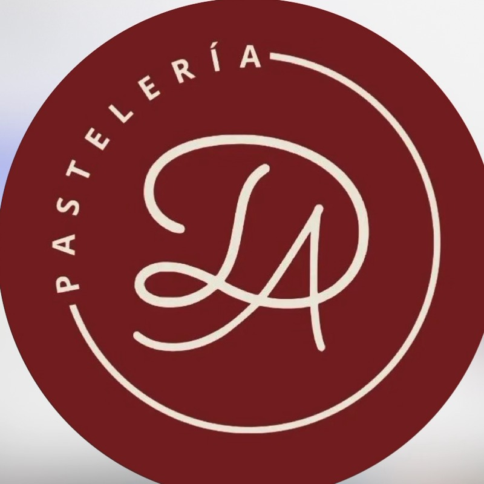
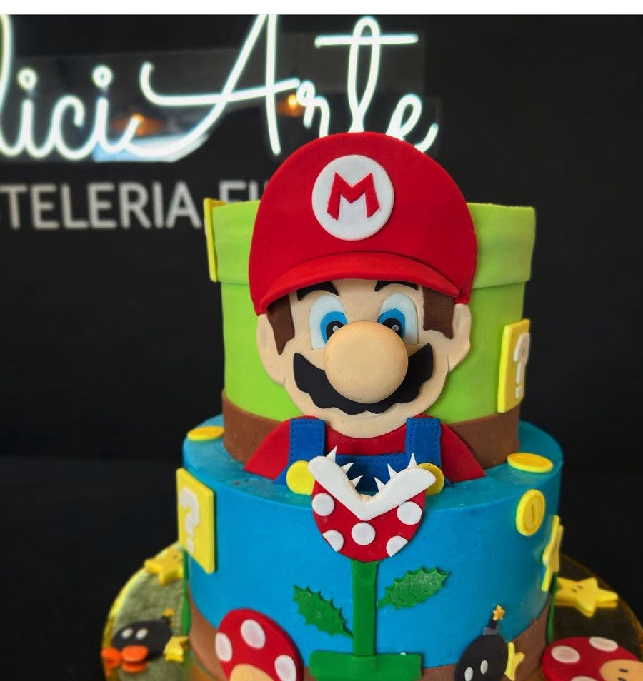
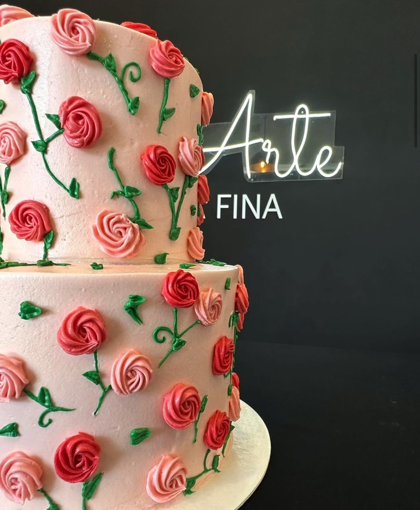
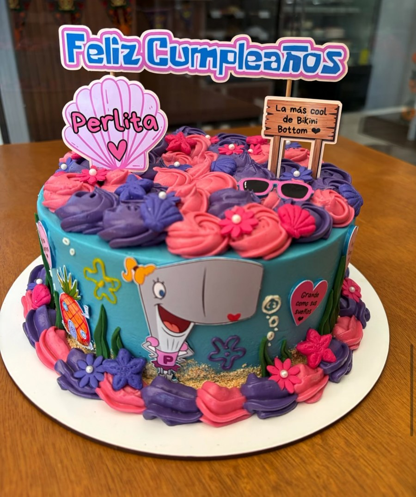
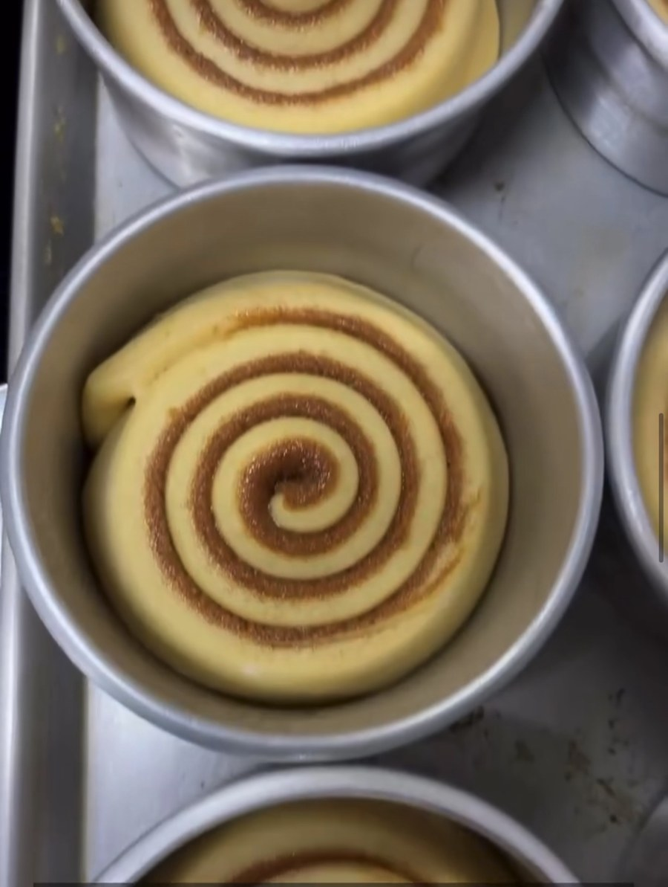
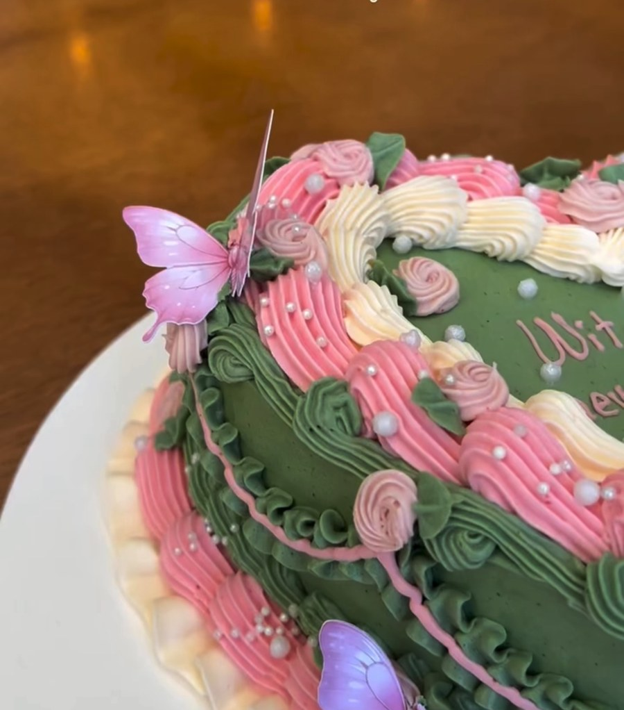
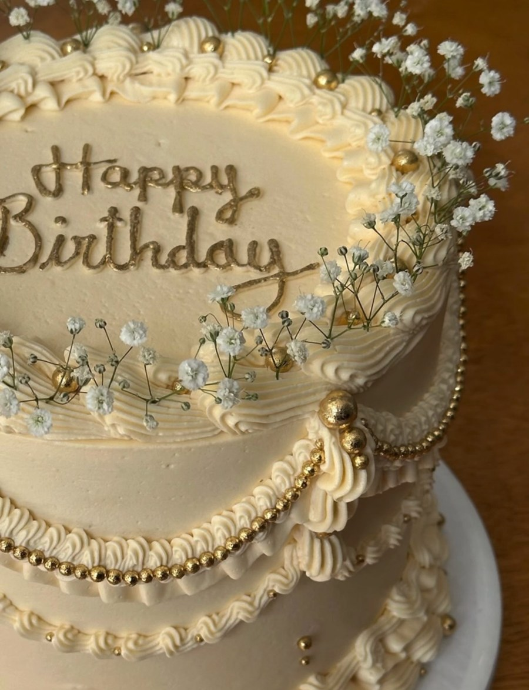
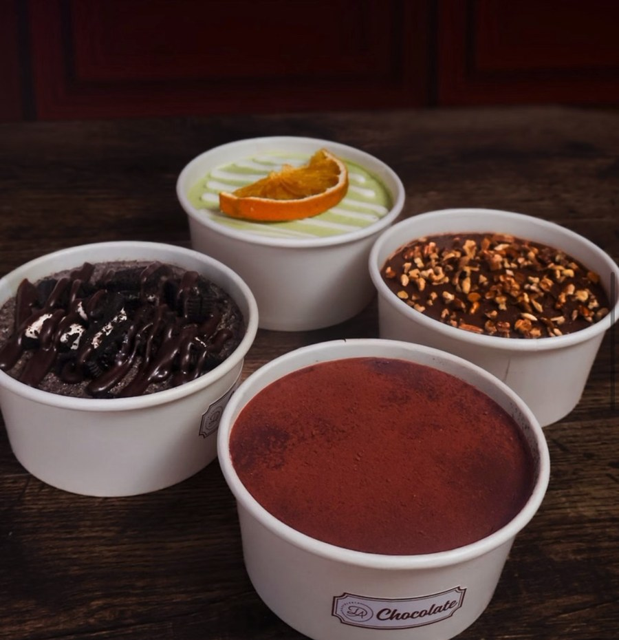

Guadalajara · 16 s + 2 s end card · 9:16 y 1:1
OBJETIVO Produce en código un video promocional spec de 16 s + 2 s de end card para DeliciArte Pastelería (Guadalajara, Jalisco): pasteles personalizados, postres y cafetería. Meta: que el dueño piense "quiero una publicidad así" y vea cómo se vería su propia página web con catálogo y botón de WhatsApp. Trabaja como "el mejor diseñador gráfico del mundo con un equipo enorme y presupuesto ilimitado". Formato principal 9:16 (1080x1920) y un re-layout real en 1:1 (no recorte). Master a 60 fps y versión H.264 a 30 fps para WhatsApp e Instagram. Nada de video generado por IA: todo en código. PRIORIDADES 1. Gancho de un golpe fuerte en el primer beat (0.00-0.50 s). 2. Una sola idea, un solo trazo que hace todo. 3. Las fotos reales de sus pasteles como protagonistas, una cosa importante por cuadro. 4. Kinetic type y motion graphics como protagonistas. 5. Cero datos inventados. Ante la duda, fuera de la pantalla. IDEA "La línea de betún". Una sola línea cursiva color crema, como un trazo de duya sobre un pastel, se dibuja en el primer beat y escribe la "DA" de su monograma (su logo es precisamente una "DA" caligráfica de un solo trazo). De esa misma línea brotan las rosetas de betún de su pastel rosa, luego la línea rodea cada pastel como un listón de cristal, se vuelve el marco de un teléfono con su "página" y por último el subrayado del botón de WhatsApp. Frase eje, de su propio WhatsApp: "sabor inigualable". La línea es la idea; los pasteles son lo que ya saben hacer. LOOK Glassmorphism real, motion graphics y kinetic type (los dos más importantes), liquid morph, isométrico minimalista con mucho espacio negativo. Cálido, elegante y oscuro, como su letrero de neón sobre pared vino. SIN AZUL en fondos ni acentos (los pasteles de las fotos pueden traer azul propio; el diseño no). Paleta (de su logo y su local): vino profundo #24080E (fondo), vino de marca #7A1F2B, crema #F6EDE1 (línea y tipografía), arena #C9A27E (acentos), rosa betún #E8A0B4 (solo toques). Contornos crema suaves. Tipografía: script caligráfico delgado para un acento (afín a su monograma y a su letrero) y sans limpia para titulares y apoyo. Sin tipografías deformadas. TÉCNICAS OBLIGATORIAS - Renderizador 2.5D en código (canvas/WebGL o numpy/OpenCV). Motor sugerido: Node + Playwright + ffmpeg. - Función determinista frame(t) y supermuestreo temporal de 8 subcuadros para el motion blur. - Un solo plano continuo, cero cortes duros. Un solo campo líquido y una sola cámara compartidos por todas las escenas. Los morphs interpolan campos de distancia (SDF), nunca fundidos de opacidad. - Glass que desenfoca de verdad lo que tiene detrás: blur 28 a 40 px, saturación 140 %, borde de 1 px, ruido 2 %. - Isométrico real a 30° con luz fija arriba-izquierda y sombras de contacto que crecen. - Kinetic type por glifo con stagger de 20 a 35 ms, máximo 3 o 4 palabras en pantalla, cada palabra con coreografía propia y aterrizando en su palabra de la locución. - Objetos reales (biseles, grosor, refracción), nunca siluetas planas ni barras de relleno. - Las fotos entran como paneles de cristal con grosor y reflejo; no escalar por encima de su resolución (son capturas de pantalla de Instagram: en un teléfono caben bien, a pantalla completa pueden verse suaves). DATOS VERIFICADOS - Negocio: DeliciArte, "DeliciArte - Pasteles | Postres | Café". Bio de Instagram: "Pastelería y Repostería · Pasteles personalizados · Cafetería". - Instagram: deliciarte_gdl (287 publicaciones, 1,858 seguidores el 14-nov-2026, según captura). No se mostrará el usuario en pantalla. - Cuenta de WhatsApp Business con catálogo (pasteles de vitrina, bebidas, pastel personalizado). Descripción: "Nuestros pasteles son realizados con la mejor calidad y con un sabor inigualable". - Productos vistos en su feed e historias: pasteles personalizados (infantiles, florales, de cumpleaños), pasteles de vitrina, pastelitos cuchareables, rollos de canela, pan de muerto de temporada, bebidas de café frías y calientes. - Sitio web: ninguno. Su enlace de bio es solo wa.me (WhatsApp). - Reseñas y calificación de Google: no se usan en el video. NO USAR SIN CONFIRMAR CON EL DUEÑO - Precios: aparecen en su catálogo de WhatsApp; no mostrar ninguno. - Teléfono, dirección y horarios: no mostrar (WhatsApp indica 9:30-21:00, pendiente de confirmar; la dirección y el teléfono de Maps están por verificar). - Nombres de personajes, logos o marcas de terceros en pasteles o postres (incluidos rótulos de ingredientes comerciales): nunca escribirlos en pantalla. Los diseños de pasteles con personajes SÍ se pueden mostrar como diseños del local (autorizado por el usuario), sin nombrarlos. - Nombres de niños o personas escritos en pasteles: recortar o desenfocar. - Fotos con personas, manos identificables u otros negocios: no usar. El video del pan de muerto trae una mano, está fuera. - Menú de café con gráficos tipo IA: fuera, no usar como visual. - Fotos tomadas de capturas: pedir originales al negocio antes de publicar. ASSETS Carpeta ./assets (usar solo estos, sin recolorear, sin rellenar con IA): 00_logo_deliciarte.jpg (logo circular vino con monograma "DA" y "PASTELERÍA"; es su marca: solo mover, escalar, desenfocar o enmascarar en círculo; trae esquinas grises fuera del círculo y está recortado casi al borde) 01_pastel_personalizado_a.jpg (pastel de dos pisos con diseño de personaje; el nombre de la persona ya está recortado) 02_pastel_rosetas_rosa.jpg 03_pastel_cumpleanos_infantil.jpg (con topper "Feliz Cumpleaños") 04_rollos_canela_horno.jpg 05_pastel_corazon_verde_rosa.jpg (tiene un texto parcial en el borde: recortar o enmascarar) 06_pastel_crema_dorado.jpg 07_pastelitos_cuchareables.jpg Si un asset trae texto o personas no previstos, recortar o enmascarar. BEAT SHEET 60 fps, 120 BPM (1 beat = 0.5 s, compás = 2.0 s), 16.00 s + 2.00 s de end card. 0.00-0.50 Golpe: la línea crema cruza la pantalla sobre fondo vino y se corta en el primer beat. Sub grave. 0.50-2.00 La línea escribe la "DA" en cursiva. Kinetic "SABOR" / "INIGUALABLE", cada palabra con su coreografía. 2.00-3.00 La "DA" hace morph SDF al círculo de su logo (asset 00) y de ahí a las rosetas del pastel rosa (asset 02). 3.00-6.00 El círculo se vuelve el marco de cristal de un teléfono; entran tres tarjetas isométricas de cristal que se estampan en el kick: PASTELES PERSONALIZADOS (01), CUMPLEAÑOS (03), CORAZÓN DE BETÚN (05). 6.00-8.00 Parallax en profundidad de 06 y 02 como paneles de cristal; kinetic "A TU GUSTO" / "A TU MEDIDA". 8.00-10.00 Muro de postres: 07 y 04 orbitando suave en isométrico; kinetic "PASTELITOS" / "CUCHAREABLES". 10.00-12.00 Catálogo: chips de cristal (PASTELES · POSTRES · CAFÉ) sobre el teléfono, la línea pasa entre los chips. 12.00-14.00 Botón de cristal "PIDE POR WHATSAPP" con icono de WhatsApp; la línea se vuelve el subrayado y pulsa con el kick. 14.00-16.00 Pull-back de cámara, el teléfono se cierra al círculo del logo; "DeliciArte · Pastelería". Respiro musical. 16.00-18.00 End card sobre fondo vino: "Precios accesibles desde $1,000 pesos por tu página" / "Paquete de 3 videos promocionales: $1,500" / "Elevate Negocios · Aguascalientes" / "Demo de cortesía de Elevate Negocios · pieza no oficial". Golpe grave en el corte final. LOCUCIÓN ElevenLabs, español de México, voz femenina cálida y natural, nunca acelerada. Guion en una sola llamada, 2 tomas. Tiempos de inicio: 0.50 "Sabor inigualable en cada pastel." 3.00 "Pasteles personalizados, a tu gusto." 6.00 "Diseños únicos para tu celebración." 8.20 "Imagina todo esto en tu propia página." 10.40 "Y postres para cada antojo." 12.40 "Pide por WhatsApp." 14.40 "DeliciArte. Pastelería." 16.30 "Tu página, desde mil pesos." Después de generar la voz, bloquear la línea de tiempo a las duraciones reales. MÚSICA Original, hecha en código, 120 BPM entero, compás de 2.0 s. Cálida y elegante (piano suave, celesta, cuerdas, pizzicato), una capa nueva por sección, lift en la revelación del teléfono (3.00 s), respiro antes del end card (14.00-16.00) y golpe grave en el corte final (16.00 s). Al menos 12 dB por debajo de la voz en cada palabra. SONIDO Al menos 70 cues de [tu biblioteca de SFX], uno por cada movimiento visible: trazo de la línea, brote de rosetas, estampado de cada tarjeta, deslizamientos de cristal, parallax, clic del botón, pulso del subrayado. Mezcla: voz alrededor de -16 LUFS, master -14 LUFS / -1.25 dBTP. MARCA El logo (asset 00) solo se mueve, escala, desenfoca o enmascara; jamás se redibuja ni se recolorea. Es de resolución moderada: usarlo a tamaño medio y pedir el logo en alta resolución antes de la versión final. La "DA" dibujada por la línea es un trazo de animación inspirado en su monograma; el logo real aparece solo como el asset 00. SEGURIDAD EN PANTALLA Contenido clave lejos de los 250 px superiores y los 340 px inferiores en 9:16. Máximo 3 o 4 palabras a la vez, alto contraste, ortografía correcta en español. Sin precios, teléfono, usuario de Instagram, dirección ni horarios. Sin nombres de personajes, marcas ni personas. Sin personas identificables. REGLAS DE CALIDAD - Un solo plano continuo, cero cortes duros; ningún morph por fundido de opacidad. - Nada de estética PowerPoint, fotos con zoom y transiciones predeterminadas, glow excesivo ni siluetas planas. - Fotos nítidas: si una no alcanza resolución, reducir su tamaño en pantalla. - Cada movimiento tiene intención y un SFX; cada palabra aterriza en su palabra de la locución. - No inventar nada: si un dato no está en DATOS VERIFICADOS, no aparece. - Verificar fotograma por fotograma y en un celular real antes de enseñar la pieza. No afirmar que se renderizó o probó algo que no se ejecutó. - Es una pieza spec privada: no publicar sin permiso del negocio. PROCESO Trabaja por fases y espera mi aprobación en cada una. 1. Revisar assets (resolución, texto o personas a recortar) y reportar. 2. Brief con tiempos exactos por fotograma a 60 fps. 3. Generar primero la voz y bloquear la línea de tiempo a ella. 4. Construir en partes paralelas con una función frame(t) compartida, un solo campo líquido y una sola cámara. 5. Prueba corta de dirección (3 a 5 s, baja resolución, 30 fps) y esperar aprobación antes del render completo. 6. Preview, hoja de contactos y chequeo cuadro por cuadro, con una ronda de arreglos. 7. Finales: 9:16 y 1:1 (re-layout real), master 60 fps y H.264 30 fps, más stems de voz, música y SFX.







